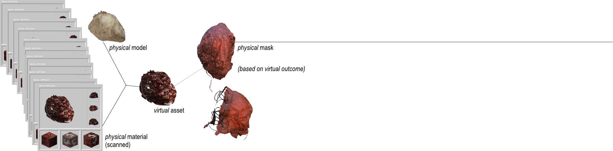

Materia
2026
Exploration of a new materials that lead me to creating the virtual world inspired by the old video games featuring repetitive patterns along with low-poly designs.
The assets and textures are made out of the scanned self-made textile and 3d models. To create a physical form of the assets, latex and wires were used.
